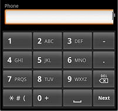

This domain is used in View mode to show a telephone number and, depending on the style of the platform, an image indicator is attached. The call can be made simply using a tap gesture. In Edit mode, it is just an edit box where a picker has been enabled to choose a phone number from the list of contacts. In touch devices, a numeric virtual keyboard is enabled.  In View mode, the information is shown in textual form, and after the tap, the call (depending on platform) is launched automatically. The Phone domain type is char(20). Tip: if the device does not support phone calls (e.g. ipad) the messaging application is started.
|
| Backlinks | ||
| Contacts external object | Category:Domains with Special Semantics | HowTo: Using PlaceCall Method From Interop in Smart Devices API |
| Interop external object | Interop.Open method |